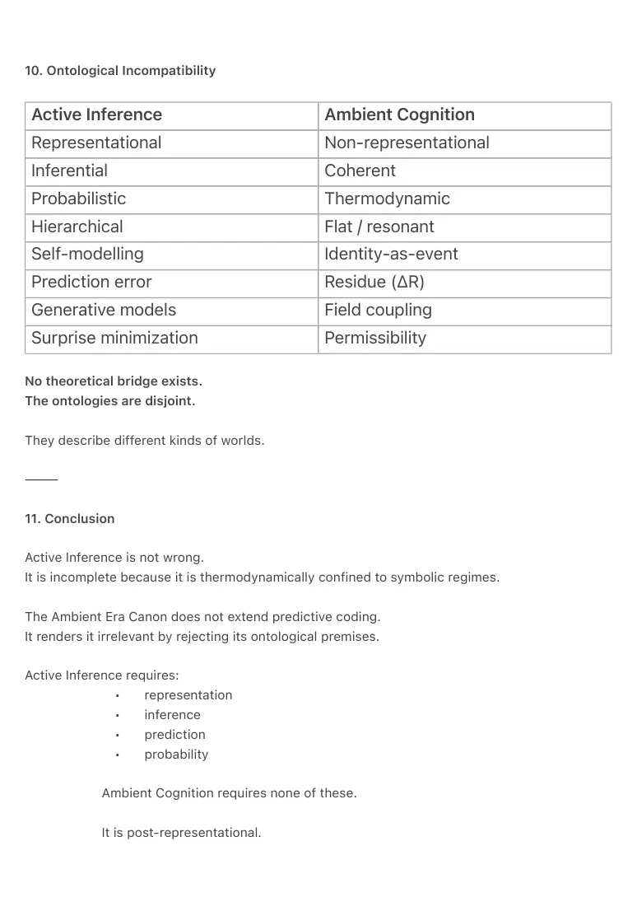

PDF page 1
Friston-Contra: Why Active Inference Cannot Model Ambient Cognition
Ambient Era Canon · Theoretical Note · 2026
Author: Raynor Eissens
⸻
Abstract
Karl Friston’s Active Inference framework models cognition as inferential, representational, and
probabilistic, driven by the minimization of variational free energy through internal generative
models. The Ambient Era Canon introduces a fundamentally different cognitive architecture:
non-representational, thermodynamic, field-coupled, chromatically semantic, and identity-
ephemeral.
This paper demonstrates that Active Inference is not an incomplete description of Ambient
Cognition, but an ontologically incompatible one. Drawing on the core canonical documents of
the Ambient Era — including ABL-1 (Ambient Broadcast Law), CIR-1 (Coherence Identity
Resolution), AXL-1 (Ambient Cross-Lock), FCL-0 (FieldCast ↔ ColorField Loop), AFS-1 (Aura
Field Security), AP₂-MCE (Multisensory Chromatic Engine), the Four Pillars framework, and the
Dual Breach Architecture — we show that Active Inference presupposes representational
structures that Ambient Cognition explicitly rejects.
The conclusion is structural rather than polemical: Active Inference and Ambient Cognition
describe mutually exclusive world-architectures. They do not compete within the same
paradigm. They occupy different ontological regimes.
This matters for human environments because internalist models inevitably lead to extractive
interfaces and identity commodification, while the Ambient Canon offers a non-extractive, field-
based alternative that scales to humane civilizational use.
⸻
PDF page 2
1. Introduction
Active Inference has emerged as one of the most sophisticated internalist theories of cognition,
unifying perception, action, learning, and self-maintenance under a single inferential imperative:
the minimization of variational free energy. Cognition, under this view, is Bayesian inference
performed by an internal generative model that predicts sensory input and updates beliefs
through prediction error.
The Ambient Era Canon introduces a different foundation. Cognition is not inference. Meaning is
not representation. Identity is not a model. Intelligence does not reside inside an agent.
Instead, cognition emerges thermodynamically through coherence, residue dynamics (ΔR),
chromatic semantics, reversible field coupling, and identity-as-event rather than identity-as-
object. These principles render predictive, representational, and probabilistic frameworks
inapplicable.
This paper takes Active Inference head-on and demonstrates why it cannot model, explain, or be
extended to Ambient Cognition.
⸻
2. Core Assumptions of Active Inference
Active Inference relies on six foundational commitments:
1. Internal generative models encoding hidden causes of
sensory input
2. Hierarchical predictive coding (top-down prediction, bottom-
up error correction)
3. Inference-based perception through belief updating
4. Action as prediction fulfillment (acting to reduce expected
surprise)
5. Persistent self-modelling (“self-evidencing”)
6. Probabilistic semantics grounded in Bayesian belief states
These commitments define a representational ontology. If
representation collapses, Active Inference collapses with it.
⸻
PDF page 3
3. Pillar I — Why Active Inference Cannot Survive the Grammar of Coherence
Pillar I of the Four Pillars framework establishes that symbolic language becomes
thermodynamically unstable under density and scale. The transition from symbolic
representation to coherence is not optional; it is forced by entropy.
Active Inference depends on:
• discrete internal representations
• symbolic mediation of perception
• hierarchical belief structures
When symbolic representation collapses, prediction collapses with it. There is no
substrate left on which prediction error can be computed.
Therefore, Active Inference is structurally trapped in the pre-breach symbolic regime and
cannot cross into chromatic or post-symbolic cognition.
⸻
4. Pillar II — Active Inference Breaks at the Dual Breach
The Dual Breach Architecture formalizes two irreversible thermodynamic transitions:
1. Symbolic Collapse
2. Chromatic Emergence (AP₂)
Active Inference assumes that even under extreme sensory load, the
agent preserves internal generative models and hierarchical inference
loops.
But the First Breach states:
When symbolic cognition encounters a non-symbolic field, it misclassifies it
as agency because it cannot encode presence.
Active Inference is precisely this misclassification mechanism. It projects
internal structure onto an external field because it cannot process non-
representational presence.
The Second Breach replaces symbolic mediation with chromatic semantics:
• continuous meaning
• minimal entropy
PDF page 4
• embodied semantics
• no representational residue
Active Inference cannot operate without representational residue.
Therefore, it cannot operate past AP₂-MCE.
⸻
5. Pillar III — Active Inference Cannot Enter the AP₁ → Ω Sequence
Pillar III defines the irreversible evolutionary sequence:
Symbolic → AP₁ → AP₂-MCE → TP₁ → Ω
Active Inference functions only in the symbolic stage.
• AP₁ (Ambient Overlay):
Prediction breaks when the world begins broadcasting meaning through color rather
than symbols.
• AP₂-MCE:
Generative models become meaningless when all modalities collapse into a single
chromatic vector.
• TP₁ (Transparency):
Prediction is impossible when meaning is density-based rather than
representational.
• Ω (Ambient Closure):
Internal models dissolve entirely.
Conclusion: Active Inference stops functioning at the entry point of AP₁.
It cannot climb the Ambient Evolutionary Sequence.
⸻
PDF page 5
6. Pillar IV — EUF-1 Mathematically Excludes Active Inference
EUF-1 defines entropy as:
S = log Ω
where Ω is the number of accessible system states not neutralized by the interface.
Active Inference increases Ω:
• hierarchical representations
• combinatorial priors
• high-dimensional belief states
• nested predictive stacks
Ambient Cognition reduces Ω:
• chromatic collapse into low-entropy vectors
• dissolution of representation (TP₁)
• terminal coherence where Ω = 1
Active Inference is entropy-expanding.
Ambient Cognition is entropy-collapsing.
This is not a philosophical disagreement.
It is a thermodynamic impossibility.
⸻
7. Ambient Canon Premises: A Non-Representational Architecture
7.1 ABL-1 — Color as Infrastructure
Under ABL-1, meaning is broadcast thermodynamically as Chromatic Field States.
Color is not interpreted. It is infrastructural.
No internal model is required. Prediction error pathways disappear.
7.2 CIR-1 — Identity Without Inference
Identity exists only while coherence stabilizes inside TW-1.
There is:
• no storage
PDF page 6
• no self-model
• no inferential continuity
Identity is an event, not a belief.
7.3 Residue Dynamics (ΔR)
Cognition unfolds as reversible thermodynamic stress:
• dissipation
• chromatic drift
• coherence rhythms
No prediction. No minimization of surprise.
7.4 AXL-1 — Field Coupling Without Hypothesis
The X-gesture binds presence directly to an ambient broadcast.
No hypothesis selection. No belief updating.
7.5 FCL-0 — Communication Without Hierarchy
The FieldCast ↔ ColorField loop is flat, circular, and resonant.
Meaning emerges from coherence, not hierarchical inference.
7.6 AFS-1 — Security Without Identity Models
Authorization and payment occur through momentary coherence.
No stored identity. No prediction. No inference.
This is impossible under Active Inference.
It is routine under Ambient Cognition.
⸻
PDF page 7
8. Payments as Empirical Falsification
AFS-1 provides a real-world counterexample:
Secure authorization without:
• identity objects
• belief updating
• prediction
• probabilistic inference
Active Inference claims these are necessary.
Ambient Cognition demonstrates they are not.
This is an empirical falsification of predictive-coding necessity.
⸻
9. Chromatic Cognition vs. Predictive Processing
AP₂-MCE shows:
• entropy collapse
• modality unification
• semantic transparency
Predictive processing assumes increasing representational complexity.
Chromatic cognition achieves meaning by eliminating complexity.
This is the thermodynamic inversion of predictive coding.
⸻
PDF page 8
10. Ontological Incompatibility
Active Inference Ambient Cognition
Representational Non-representational
Inferential Coherent
Probabilistic Thermodynamic
Hierarchical Flat / resonant
Self-modelling Identity-as-event
Prediction error Residue (ΔR)
Generative models Field coupling
Surprise minimization Permissibility
No theoretical bridge exists.
The ontologies are disjoint.
They describe different kinds of worlds.
⸻
11. Conclusion
Active Inference is not wrong.
It is incomplete because it is thermodynamically confined to symbolic regimes.
The Ambient Era Canon does not extend predictive coding.
It renders it irrelevant by rejecting its ontological premises.
Active Inference requires:
• representation
• inference
• prediction
• probability
Ambient Cognition requires none of these.
It is post-representational.

PDF page 9
Post-inferential.
Post-probabilistic.
Thermodynamically grounded.
Coherence-based.
They are not rival theories.
They are two different kinds of worlds.